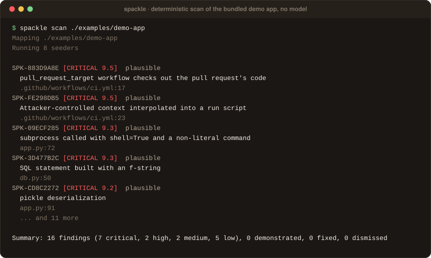

Agentic security and debugging that finds real flaws, proves them, explains how they would be exploited, and fixes them.
Point it at your own code, your own running application, or your own infrastructure files. It reports what is wrong, shows the evidence, says how sure it is, and hands you a checked patch.
Built for developers, AppSec engineers and small security teams testing systems they own or are authorized to test.
go install github.com/TMHSDigital/spackle/cmd/spackle@latest

Quick start
Spackle is one static binary. The first run below needs no model, no key and no container runtime.
Windows (PowerShell)
go install github.com/TMHSDigital/spackle/cmd/spackle@latest
git clone https://github.com/TMHSDigital/Spackle.git
cd Spackle
spackle scan .\examples\demo-app
Linux and macOS
go install github.com/TMHSDigital/spackle/cmd/spackle@latest
git clone https://github.com/TMHSDigital/Spackle.git
cd Spackle
spackle scan ./examples/demo-app
That scan is deterministic: built-in rules plus any scanners you have installed. Every finding it prints is labelled plausible, because nothing has confirmed it yet. To have Spackle investigate, prove and fix, give it a model and a container runtime:
With a model
spackle doctor # what is installed, what is missing
export ANTHROPIC_API_KEY=... # your own key; Spackle ships none
spackle scan ./examples/demo-app --provider anthropic --model claude-opus-5-5
Before a paid run Spackle prints an estimate and the hard caps, and waits for a yes. Configuration covers OpenRouter, other OpenAI-compatible endpoints and fully local models.
Why Spackle
Proof, not a hunch
A finding is demonstrated by a proof of concept run in a sandbox, or by the recorded request and response for a running target. When nothing was run, the finding says so.
The attacker's view
Each finding gives preconditions, the attack step by step, what it chains into and the blast radius, written for the person who has to decide what to fix first.
Fix and verify
The fixer writes the smallest patch. It is accepted only if the changed files still compile, the proof stops working, and a passing test suite still passes.
Runs offline
Ollama and any local OpenAI-compatible server are first-class. --offline refuses every connection that would leave the machine.
No listening ports
Spackle is a command, not a server. Nothing binds a port, there are no default credentials, and a test fails the build if that ever changes.
Evidence ledger
Every run writes an append-only ledger. Reports are rebuilt from it alone, so a report is the same bytes every time.
Honest confidence
demonstrated, high or plausible, each with its reason. A separate reviewer tries to refute every finding, and what it refutes is listed with why.
Your secrets stay put
Secret detection runs before anything reaches a model. Reports name the rule, the location and a short hash, never the value.
How it works
Scope gate
Mapper
Seeders
Planner
Investigators
Reviewer
Prover
Fixer
Reports
Evidence ledger Every stage from the mapper to the fixer writes to it, and reports are rebuilt from it alone.
Scope gate. A live URL needs an authorized scope before a single request is sent. Local source does not.
Mapper and seeders use no model. The mapper finds languages, frameworks, entry points and trust boundaries. Seeders produce leads from built-in rules (Go, Python, JavaScript and TypeScript, secrets, Dockerfiles, Kubernetes, Terraform, GitHub workflows) and from Semgrep, gitleaks, osv-scanner, Trivy and hadolint when they are installed. Leads are hints, not verdicts.
Planner turns the map and the leads into a short list of questions worth answering.
Investigators answer one question each with read-only tools confined to the target. Every draft is checked before it counts: quoted lines must exist in the file they cite, and the CVSS 4.0 score is computed by Spackle from the vector.
Reviewer sees only the claim, not the reasoning, and tries to refute it.
Prover writes a small proof of concept and runs it in a container with no network, no capabilities, a read-only root and a read-only copy of your source.
Fixer returns whole files; Spackle computes the patch, checks it in the sandbox, and commits accepted fixes to spackle/<run-id> in a separate worktree. Your working tree is never touched.
Scope, budgets and tool permissions are enforced in code. Nothing in a target can change them, because no tool exists whose effect is to change them. docs/ARCHITECTURE.md has the detail.
Anatomy of a finding
Every finding has the same parts:
identity
severity, with its CVSS 4.0 vector
the flaw
the exploitation scenario
the proof
the blast radius
the remediation
a confidence label, with its reason
Real output, from a running-target scan of the bundled demo app on localhost with no model configured.
SPK-9658B583: Path traversal in parameter name of /file
Severity
HIGH 8.7
Confidence
demonstrated
Location
GET /file (parameter name)
The flaw
GET /file with name set to ..\..\..\..\..\..\windows\win.ini returned status 200 with the content of a system file. The parameter is used as a file path without being confined to the intended directory, so any file the server process can read can be downloaded.
Captured result
; for 16-bit app support [fonts] [extensions] [mci extensions] [files] [Mail] MAPI=1
Remediation
Resolve the requested name against a fixed base directory and refuse any result outside it, or map the parameter to an allowlist of files instead of using it as a path.
With a model, the exploitation scenario and remediation are written for the specific application instead of the class.
Reports render as terminal text, Markdown, HTML, JSON and SARIF. spackle report <run-id> --format html rebuilds any of them from the ledger. docs/findings.md documents every field.
Running targets
Point Spackle at an application you run. It crawls within scope, probes without changing state, and ties each finding to the stored request and response that show it.
# scope.toml
hosts = ["localhost:8081"]
statement = "My own dev server."
The action installs a release, verifies its checksum and build provenance, runs the scan, and uploads SARIF so findings appear in GitHub code scanning. By default it runs the deterministic stages, which need no key and cost nothing. docs/ci.md shows how to add a model and lists every input.
MCP
spackle mcp serves Spackle's tools to an MCP client over stdin and stdout. You set the limits on the command line and the model chooses only within them: it can scan directories under --root, read reports and findings, and nothing else. It cannot pick a provider, raise a budget or reach a live target.
claude mcp add spackle -- spackle mcp --root /absolute/path/to/project
docs/mcp.md has the tool list and client configuration.
Privacy
Mode
What leaves the machine
No model configured
Nothing from Spackle. Installed scanners may fetch their own vulnerability databases.
Hosted provider
Prompts, plus redacted excerpts of the files the model asks to read, go to the provider you chose. Secret values are replaced before sending.
Local model
Requests go to localhost only.
--offline
Any non-loopback connection by Spackle is refused, and a remote provider is rejected before the run starts.
There is no telemetry and no update check. docs/PRIVACY.md has the full account.
Benchmark
bench/corpus holds small fixture projects in Go, Python and TypeScript/JavaScript with planted, documented flaws, plus clean decoys that only look risky. make bench scores a run against the ground truth. This table is generated from the results files committed under bench/results and is never edited by hand.
Date
Version
Model
Mode
Precision
Recall
Verified-fix rate
Cost per finding
2026-11-22
0.1.0
none
deterministic
83.9%
68.4%
n/a
n/a
Small synthetic fixtures are not your codebase, and these numbers will not transfer to it unchanged. docs/benchmark.md explains the scoring and how to run it with your own model.
Limits
Proofs and fixes are run automatically for Go, Python and TypeScript/JavaScript. Other languages get findings and analysis only.
The sandbox has no network, so a proof can use the standard library and what is already in the repository, and nothing that would need installing.
Without Docker or Podman nothing is executed: findings are reasoned, not demonstrated, and no fix is verified.
This is agentic work. It needs a capable tool-calling model. Small local models produce malformed answers; Spackle rejects those and falls back to reporting leads, which is safe but not useful.
Running-target mode sends plain HTTP requests. It does not drive a browser or log in for you.
A model writes the proofs. demonstrated means the proof ran and printed an unguessable marker. Read the stored proof before you rely on it.